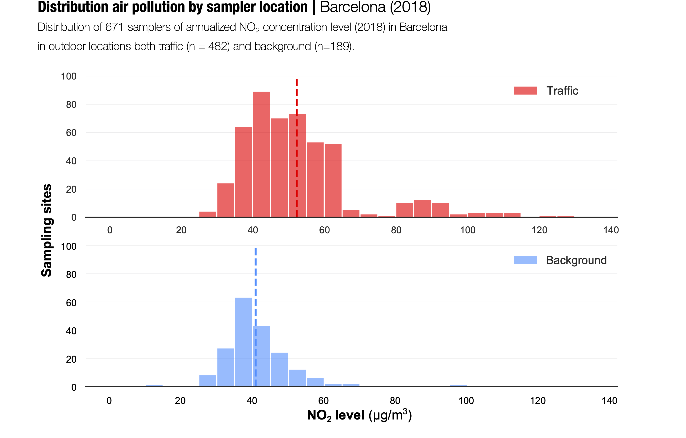
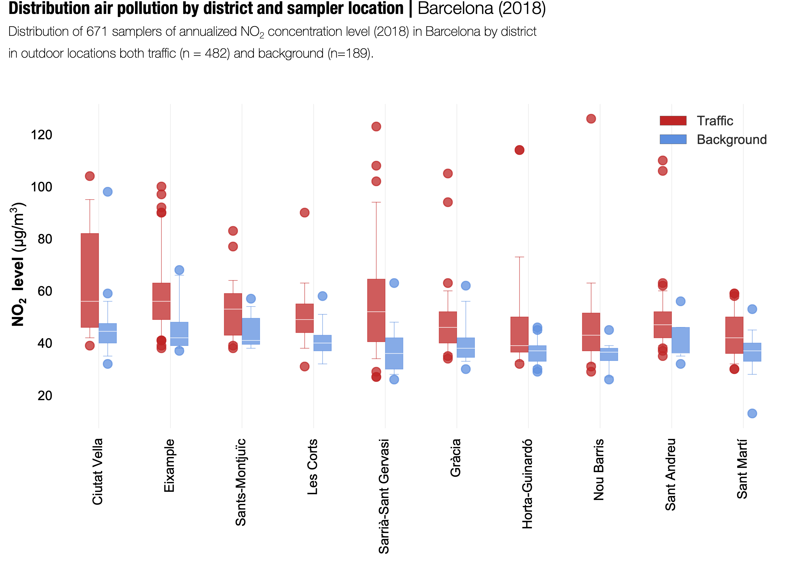

Research Paper
«Large-scale citizen science provides high-resolution nitrogen dioxide values and health impact while enhancing community knowledge and collective action»
This paper has been published on Science of The Total Environment
as a result of the «xAire» project, a pop-up citizen science initiative within The City Station as part of the «After the end of the world» exhibition at the Centre de Cultura
Contemporània de Barcelona. In xAire participated more than 1,650 individuals, 10 professional research scientists, about 36 teachers, 4 non-scientific organizations and
families and students from 18 primary public schools distributed among the 10 districts of the city of Barcelona.
Hereunder some images that summarize the collective and participatory research
focused on the measurement of NO2 levels in Barcelona during 2018.
Map with all outdoor sampler locations (n = 671) with color code based on their annualized NO2 concentration levels. © Julián Vicens

Distribution of NO2 levels based on the sampler location: background (100m away from streets with motorized vehicles) and traffic. © Julián Vicens
